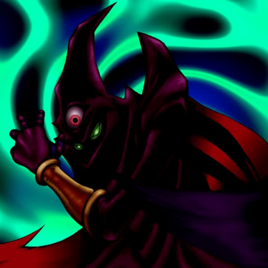

Invitation to a Dark Sleep

Description: "When this card is flipped face-up, all enemy cards are spellbound for 1 turn."
STATS
ATK: 1500
DEF: 1800
DECK COST
Deck Cost per Card: 38
EFFECT NOT IMPLEMENTED